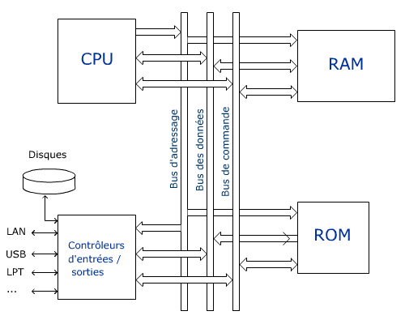

Bus informatique
Un bus est un dispositif de transmission de données partagé entre plusieurs composants d’un système numérique.
Un bus d’ordinateur est un moyen de transférer des données depuis une partie de l’ordinateur vers une autre.Il relie les divers organes à l’unité de contrôle et à la mémoire centrale.
Un bus est un ensemble de conducteurs électriques qui transportent des signaux que partagent plusieurs connexions en parallèle. Le groupement de ces lignes mises en commun par le CPU et les dispositifs qui lui sont connectés est appelé bus processeur, bus système ou encore front side bus (FSB). Il véhicule trois types de signaux : les adresses, les données et les commandes.
Bus de données
Un bus d’ordinateur est un moyen de transférer des données depuis une partie de l’ordinateur vers une autre.Il relie les divers organes à l’unité de contrôle et à la mémoire centrale.
Un bus est un ensemble de conducteurs électriques qui transportent des signaux que partagent plusieurs connexions en parallèle. Le groupement de ces lignes mises en commun par le CPU et les dispositifs qui lui sont connectés est appelé bus processeur, bus système ou encore front side bus (FSB). Il véhicule trois types de signaux : les adresses, les données et les commandes.
Bus de données
- un bus de données est un bus informatique dédié au transfert des données au sein de l’ordinateur.
- Il est bidirectionnel, contrairement au bus d’adresse.
- Est bidirectionnel puisque le processeur l’utilise pour lire et pour écrire en mémoire ou dans les I/O
- Sur lequel circulent les instructions ou les données à traiter ou déjà traitées en vue de leur rangement.
- La largeur du bus de données est directement liée au plus grand nombre que le bus peut transporter. Par exemple un bus 8 bits peut représenter 2 à la puissance de 8 valeurs uniques. Cela équivaut aux numéros 0 à 255. Un bus de 16 bits peut porter les valeurs 0 à 65535 et ainsi de suite.
- Permet de désigner à chaque instant la case mémoire et/ou le périphérique auquel le contrôleur veut faire appel.
- Dans le cas d’une carte mère d’un ordinateur à plusieurs cartes mémoires il faut d’abord sectionner la carte dans laquelle on va travailler grâce à la commande Chip select.
- Permet de désigner à chaque instant la case mémoire et/ou le périphérique auquel le contrôleur veut faire appel.
- Un bus de contrôle est un bus d’ordinateur utilisé par la CPU pour communiquer avec les périphériques contenus dans l’ordinateur. Cela se produit par des connexions physiques telles que des câbles ou des circuits imprimés.
